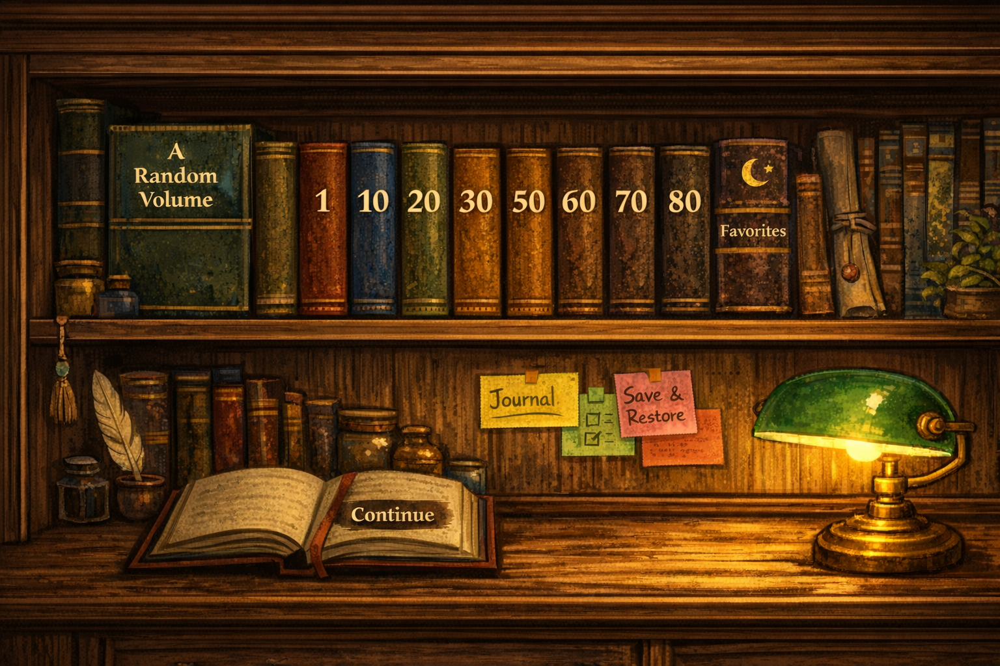

Surah Walker
Randomly choosing a surah…
Start
Tap anywhere to advance word-by-word. 🔊 = transliteration, 🌐 = meaning.
Surah Walker
Randomly choosing a surah…
Tap anywhere to advance word-by-word. 🔊 = transliteration, 🌐 = meaning.